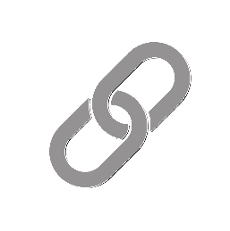

Fluxee v5.1 by Pallox
Fluxee v5.1 by Pallox
Fluxee ist eine vollständige Stream-Management-Suite für Fansly-Creator. Sie läuft direkt im Browser als Chrome-Erweiterung — kein separates Konto, kein externer Bot, keine zusätzliche Anmeldung. Alle Nachrichten werden als du gepostet.
Fluxee wurde mit Kontosicherheit als Kernpriorität entwickelt. Alle automatisierten Aktionen enthalten integrierte Schutzmaßnahmen für dein Fansly-Konto. Zuverlässigkeit ist ebenso zentral — Fluxee ist darauf ausgelegt, bei langen Streams, Seitenneuladen und Fansly-Navigation reibungslos zu laufen.
Neu in Version 5.1
🗓️ Menü-Zeitplan
Automatische Menürotation nach Zeitplan mit visueller Wochenübersicht.
📺 Stream-Overlays
OBS-Overlays: Live-Bestenliste, Stream-Ziel und Endkarte.
🚂 Hype Train
Animiertes OBS-Overlay, das Trinkgeld-Serien mit Leveln und visuellen Effekten feiert.
🎬 Trigger-Engine
Automatische Animationen und Chat-Nachrichten basierend auf Trinkgeldern und Zielen.
📈 Erweiterte Statistiken
Zuschauerbindung, Zielrechner, Einnahmenanteil, Heatmap-Tooltips und CSV-Export.
🎨 Verbesserter Designer
Menüvorlagen-Bibliothek, Farbkennzeichnung, Standardmenü und Lösch-/Kopierwerkzeuge.
🛠️ Installation
- Gehe zu
chrome://extensions/
in Chrome. - Aktiviere den Entwicklermodus mit dem Schalter oben rechts.
- Klicke „Entpackte Erweiterung laden" und wähle den Ordner
Fluxee_v5.1. - Klicke auf das Puzzle-Symbol (🧩) in der Chrome-Symbolleiste, finde Fluxee v5.1 by Pallox und klicke auf das Pin-Symbol (📌).
- Wenn du Stream-Overlays oder Hype Train verwendest, lade FluxeeBridge.exe von der GitHub Releases-Seite herunter und starte sie. Falls Windows eine Sicherheitswarnung anzeigt, klicke auf Weitere Informationen → Trotzdem ausführen — das ist bei neuer Software normal.
⚠️ Lade die Fansly-Seite immer neu, nachdem du die Erweiterung installiert oder aktualisiert hast.
🔐 Einmalige Berechtigungseinrichtung
- Navigiere zu
https://fansly.com/creator/streaming. - Rechtsklicke auf das Fluxee-Symbol in der Chrome-Symbolleiste.
- Wähle „Diese Seite kann Daten lesen und ändern".
- Wähle „Auf fansly.com".
Dies ist nur einmal erforderlich. Die Erweiterung merkt sich die Berechtigung zwischen Sitzungen.
🚀 Erster Start
Klicke auf das angeheftete Fluxee-Symbol in der Chrome-Symbolleiste, um die Seitenleiste zu öffnen. Fluxee löst deine Fansly-Identität und den Chat-Raum automatisch im Hintergrund auf — dies dauert beim ersten Laden einige Sekunden.
💡 Halte die Fansly-Creator-Streaming-Seite während der Verwendung von Fluxee immer geöffnet.
🟢 Bot starten
Der Bot starten-Button in der Seitenleiste aktiviert alle automatisierten Funktionen. Das Fluxee-Symbol in der Chrome-Symbolleiste wird rot (🔴), wenn der Bot läuft.
- Die meisten Einstellungsfelder sind schreibgeschützt, während der Bot läuft. Stoppe den Bot, um sie zu bearbeiten.
- Das Feld Menüinhalt bleibt beim Laufen des Bots auswählbar — du kannst einzelne Zeilen markieren und senden.
- Verwende den Button 🚀 Menü jetzt posten, um dein aktives Menü sofort in den Chat zu senden.
📢 Auto-Post
Das Auto-Post-System hält dein Trinkgeldmenü im Chat sichtbar, ohne manuellen Aufwand.
Auslösemodi
- Minuten: Der Bot postet dein aktives Menü in festen Zeitabständen mit einem zufälligen Versatz.
- Nachrichten: Der Bot zählt eingehende Chat-Nachrichten und postet das Menü, sobald der Schwellenwert erreicht ist.
💡 Wechsle bei aktiven Streams in den Nachrichten-Modus für bessere Sichtbarkeit ohne Chat-Spam.
💬 Auswahl in den Chat senden Neu
Während der Bot läuft, kannst du beliebigen Text im Feld Menüinhalt markieren und ihn mit einem Klick direkt in den Fansly-Chat senden.
- Starte den Bot.
- Klicke und ziehe, um beliebigen Text im Menüinhalt-Feld zu markieren.
- Klicke auf den 💬-Button neben der Beschriftung „Menüinhalt". Er aktiviert sich nur, wenn Text ausgewählt ist und der Bot läuft.
- Der ausgewählte Text wird sofort in den Chat gesendet.
💡 Nutze dies, um die Frage eines Zuschauers zu beantworten, indem du nur die relevante Menüzeile sendest, ohne das gesamte Menü zu posten.
🤖 Auto-Responder
Der Auto-Responder antwortet automatisch auf Chat-Befehle.
- !menu-Befehl: Wenn ein Zuschauer
!menuim Chat eingibt, wird dein aktives Menü sofort gepostet. - Cooldown !menu: Verwendet das Auto-Post-Intervall (in Minuten) — verhindert Spam des Menüs auf Abruf.
- Cooldown eigener Befehle: Jeder eigene Befehl (z.B.
!socials) hat einen unabhängigen 60-Sekunden-Cooldown. Verschiedene Befehle können nacheinander verwendet werden, ohne sich gegenseitig zu beeinflussen. - Du kannst deine eigenen Befehle verwenden: Als Streamer kannst du
!menuoder eigene Befehle im Chat eingeben — der Bot antwortet genauso wie bei einem Zuschauer.
🤖 Eigene Befehle
Erstelle eigene Chat-Befehle durch Klicken auf den Button Eigene Befehle.
- Gib einen Auslösernamen ein (ohne das
!-Präfix — z.B. wirdsocialszu!socials). - Gib die Bot-Antwort ein — den vollständigen Text, den der Bot postet.
- Klicke 💾 Befehl speichern.
- Verwende den Schalter in jeder Zeile, um Befehle individuell zu aktivieren oder deaktivieren.
💾 Gespeicherte Auto-Dankeschön-Nachrichten Neu
Erstelle eine Bibliothek wiederverwendbarer Dankeschön-Vorlagen direkt auf der Seite „Eigene Befehle".
- Gib deine Dankesnachricht im Feld Auto-Dankeschön-Nachricht mit
{user}und{item}ein. - Klicke 💾 Nachricht speichern, um sie zur Bibliothek hinzuzufügen.
- Klicke ↩ Laden bei einer gespeicherten Nachricht, um sie zu aktivieren.
- Klicke 🗑, um eine gespeicherte Nachricht zu löschen.
✨ Auto-Dankeschön für Trinkgelder
Veröffentliche automatisch eine öffentliche Danksagung, wenn ein Zuschauer für einen Menüpunkt tippt.
- Aktiviere den Schalter Auto-Dankeschön für Trinkgelder in der Seitenleiste.
- Passe die Nachricht mit
{user}(Benutzername des Fans) und{item}(getippter Menüpunkt) an. - Beispiel: „✨ {user} hat gerade für {item} getippt! Vielen Dank! ✨"
📋 Gästeliste
Jeder Tipper wird automatisch zur Gästeliste hinzugefügt.
- Klicke 📋 Namen kopieren, um eine kommagetrennte Liste aller Tipper in die Zwischenablage zu kopieren.
- Klicke 🗑️ Liste zurücksetzen zu Beginn jedes Streams.
💾 Datensicherung und Wiederherstellung
- Sicherung exportieren: Klicke 💾 Backup exportieren, um eine
.txt-Datei mit allen Menüs, Befehlen und Analysen herunterzuladen. - Sicherung importieren: Klicke 📂 Backup importieren und wähle eine zuvor exportierte Datei.
💡 Exportiere mindestens einmal pro Woche eine Sicherung, um deine Statistikhistorie zu schützen.
✏️ Trinkgeldmenü-Designer — Design-Tab
Der Designer ist eine dedizierte Seite, die über die obere Navigationsleiste erreichbar ist. Er bietet einen visuellen Arbeitsbereich zum Erstellen, Vorschauen und Speichern professioneller Trinkgeldmenüs.
Öffne den Designer durch Klicken auf 🎨 Trinkgeldmenü-Designer in der oberen Navigation. Verwende die Tabs ✏️ Design und 🗓️ Zeitplan, um zwischen den Arbeitsbereichen zu wechseln.
📐 Strukturvorlagen
Die fünf Strukturvorlagen definieren das allgemeine Layout der Menüzeilen.
- 📜 Klassische Liste: Ein Eintrag pro Zeile — übersichtlich und lesbar.
- 📏 Vertikale Pipeline: Einträge durch senkrechte Striche getrennt.
- 🏷️ Gekennzeichnete Klammern: Preise in eckigen Klammern vor jedem Eintrag.
- 🎀 Horizontales Band: Alle Einträge in einer Zeile mit Trennzeichen.
- 🔳 Intelligentes Raster: Einträge in einem 2-Spalten-Layout.
🎨 Style-Assets
Emojis
Klicke auf ein Emoji, um es an der Cursorposition einzufügen. Speichere eigene Emojis über das Eingabefeld unten im Tab.
Dekorationen
Texttrennzeichen. Klicke zum Einfügen an der Cursorposition. Speichere eigene Dekorationen für die Wiederverwendung.
Schriftarten
Markiere Text in der Quellliste und klicke dann auf einen Schriftstil, um ihn in Unicode-Zeichen umzuwandeln.
Meine Vorlagen
Speichere eigene Zeilenformatierungsvorlagen mit den Platzhaltern {icon}, {label} und {price}.
👁️ Live-Fansly-Vorschau
Die Vorschau in Spalte 3 aktualisiert sich in Echtzeit und zeigt genau, wie der Beitrag im Fansly-Chat aussehen wird — einschließlich Zeilenumbrüchen entsprechend Fanslys Zeichenlimit.
- Verwende den 📋-Button neben der Beschriftung „Quellliste", um den rohen Inhalt in die Zwischenablage zu kopieren.
🗓️ Trinkgeldmenü-Designer — Zeitplan-Tab Neu
Der Zeitplan-Tab ermöglicht die Automatisierung der Menürotation während deines Streams. Statt Menüs manuell zu wechseln, definierst du Zeitfenster und Fluxee erledigt den Rest.
🗓️ Zeitplanslots
Es sind bis zu 8 Zeitplanslots verfügbar. Jeder Slot definiert ein Zeitfenster, in dem ein bestimmtes Menü aktiv ist.
Slot konfigurieren
- Klicke auf den Slot-Header, um ihn aufzuklappen.
- Aktiviere den Slot mit dem Schalter rechts im Header.
- Wähle ein Menü aus der Dropdown-Liste.
- Stelle die Start- und Endzeit mit den Zeitauswahlfeldern ein.
- Stelle das Intervall Posten alle ein (Minuten oder Nachrichten).
- Wähle die Wochentage, an denen dieser Slot gelten soll.
Überlappungsverhinderung
Fluxee verhindert, dass zwei aktivierte Slots an demselben Tag überlappende Zeiten haben. Eine Änderung wird automatisch rückgängig gemacht, wenn sie eine Überlappung verursachen würde.
Fallback-Verhalten
- Standardmenü und manuelles Intervall verwenden: Der Bot postet weiter mit den Einstellungen der Seitenleiste.
- Auto-Post pausieren: Der Bot stoppt das Posten, bis der nächste Slot aktiv wird.
💡 Der Zeitplan verwendet automatisch deine Systemuhr und Zeitzone.
📅 Wochenzeitplan
Der Wochenzeitplan in der rechten Spalte visualisiert alle konfigurierten Slots für einen ausgewählten Tag.
- Klicke auf einen Tages-Button (Mo–So), um den Zeitplan für diesen Tag anzuzeigen.
- Jeder Slot erscheint als farbiger Block. Aktivierte Slots sind voll opak; deaktivierte sind abgedunkelt.
- Eine weiße Nadel zeigt die aktuelle Uhrzeit am aktuellen Tag an.
💰 Statistiken — Einnahmen-Tab
Die Statistikseite ist über die obere Navigationsleiste erreichbar. Verwende die Tabs Einnahmen, Ziele und Zuschauer, um zwischen Ansichten zu wechseln.
Das Banner Einnahmenstatistiken oben im Einnahmen-Tab zeigt vier Schlüsselkennzahlen: Gesamte Trinkgelder, Bruttoeinnahmen, Durchschnittliches Trinkgeld und Nach Fansly-Abzug.
Verwende die Zeitraum-Buttons — 24h / 7 Tage / 30 Tage / Gesamte Zeit — um alle Daten im Einnahmen-Tab zu filtern.
📊 Trinkgeld-Übersicht
Die Trinkgeld-Übersichtstabelle zeigt jeden Menüpunkt, der ein Trinkgeld erhalten hat, mit vier sortierbaren Spalten:
- Artikel: Name des Menüpunkts.
- Anzahl: Wie oft dieser Punkt ein Trinkgeld erhielt.
- Einnahmen: Gesamte Bruttoeinnahmen aus diesem Punkt.
- Anteil Neu: Einnahmen dieses Punkts als Prozentsatz der Gesamteinnahmen.
Klicke auf einen Spaltenheader zum Sortieren. Standard-Sortierung nach Einnahmen absteigend.
📈 Einnahmen im Zeitverlauf
- Nach Stunde: Balkendiagramm mit Bruttoeinnahmen nach Tageszeit.
- Nach Wochentag: Einnahmen nach Tag — nützlich zur Identifikation ertragreichster Streaming-Tage.
🌡️ Trinkgeld-Heatmap
Die Heatmap zeigt die Trinkgeldintensität über alle 24 Stunden und 7 Wochentage gleichzeitig. Dunklere Zellen zeigen höhere Trinkgeldaktivität an.
Fahre mit der Maus über eine Zelle, um Detailinformationen zu sehen: Gesamteinnahmen, Anzahl der Trinkgelder und Durchschnittsbeleg.
🎯 Zielrechner Neu
Der Zielrechner hilft dir, einen Stream zu planen, indem er schätzt, wie lange du streamen musst, um ein Einnahmenziel basierend auf deiner historischen Performance zu erreichen.
- Gib deinen Zieleinnahmebetrag in das $-Eingabefeld ein.
- Der Rechner zeigt sofort: geschätzte benötigte Stunden, wahrscheinlichen Bereich, geschätzte Anzahl an Trinkgeldern und deinen durchschnittlichen Stundensatz.
🏆 Privates Ziel und Speichernutzung
Die Karte Privates Ziel verfolgt einen persönlichen Einnahmen-Meilenstein, der vom Fansly-Zielsystem unabhängig ist.
Die Karte Speichernutzung zeigt, wie viel lokalen Chrome-Speicher Fluxee für deine Analysedaten verwendet. Verwende den Button Jetzt kürzen, um ältere Daten zu entfernen.
⬇️ CSV-Export Neu
Exportiere deine vollständige Trinkgeldhistorie als CSV-Datei zur externen Analyse.
Klicke auf den Button ⬇ CSV exportieren rechts in der Zeitraum-Symbolleiste. Die Datei wird im Downloads-Ordner als fluxee_tips_YYYY-MM-DD.csv gespeichert.
🎯 Statistiken — Ziele-Tab
Der Ziele-Tab verwaltet die Integration mit Fanslys Live-Zielsystem — Synchronisation, Verfolgung, Archivierung und Warteschlangenverwaltung von Zielen.
🔄 Live-Zielsynchronisation
Fluxee verbindet sich direkt mit der Fansly-API, um deine aktiven Ziele in Echtzeit zu verfolgen.
- Fansly unterstützt 3 Ziel-Slots (Oben, Mitte, Unten). Alle drei werden gleichzeitig verfolgt.
- Wenn alle 3 Slots belegt sind, kannst du weitere Ziele in die Warteschlange stellen. Wenn ein Slot frei wird, synchronisiert Fluxee automatisch das nächste Ziel.
🏦 Gespeicherte Zielbank
- Gib einen Namen, einen Zielbetrag (in Dollar) und eine optionale Beschreibung ein.
- Klicke 💾 Ziel speichern.
- Klicke das ☆-Symbol, um ein Ziel als Beliebt zu markieren — es wird an den Anfang der Liste verschoben.
- Klicke auf ein Ziel, um es aufzuklappen und die Slot-Buttons zu verwenden.
📜 Zielarchiv
Abgeschlossene und abgelaufene Ziele werden automatisch ins Zielarchiv verschoben. Die letzten 50 Ziele werden gespeichert.
- Als Erreicht (Cyan) markierte Ziele haben ihr Ziel erfüllt. Als Gescheitert (Rot) markierte wurden vorzeitig gestoppt.
- Verwende das Tag-System, um Ziele zur Performance-Analyse zu kategorisieren.
👥 Statistiken — Zuschauer-Tab
Der Zuschauer-Tab liefert Einblicke in dein Publikum — wer deine Tipper sind, wie loyal sie sind und wie sie sich im Laufe der Zeit engagieren.
Verwende die Zeitraum-Buttons — Heute / Diese Woche / Dieser Monat / Gesamte Zeit.
Zeile 1 — Zusammenfassungskarten
- Trinkgeldhäufigkeit: Wie viele Fans einmal, ein paar Mal oder regelmäßig getippt haben.
- Neu vs. Wiederkehrend: Donut-Diagramm mit Ersttippern vs. Fans, die zuvor getippt haben.
- Durchschnittliches Trinkgeld pro Zuschauer: Gesamteinnahmen geteilt durch einzigartige Tipper.
🔄 Zuschauerbindung Neu
Die Karte Zuschauerbindung zeigt Loyalitätskennzahlen des Publikums basierend auf deiner Trinkgeldhistorie.
- Rückkehrquote: Prozentsatz der Tipper, die für mindestens eine zweite Sitzung zurückgekehrt sind.
- Durchschn. Sitzungen: Durchschnittliche Anzahl unterschiedlicher Streaming-Tage pro Tipper.
- Aufteilungsbalken: Visuelle Aufschlüsselung von Einmaligen vs. Wiederkehrenden.
- Top wiederkehrende Tipper: Die 5 treuesten Fans nach Sitzungsanzahl.
🏆 Top-Tipper und Größtes Einzeltrinkgeld
Die Top-Tipper-Bestenliste ordnet alle Tipper nach Gesamteinnahmen im ausgewählten Zeitraum. Jede Zeile zeigt Anzahl der Trinkgelder, Gesamtbetrag, größtes Einzeltrinkgeld und ⭐ für Abonnenten.
Die Karte Größtes Einzeltrinkgeld hebt das Rekordtrinkgeld mit Fanname, Artikel und Datum hervor.
🎬 Trigger & Overlays — Trigger-Tab
Die Seite Trigger & Overlays ist über die obere Navigationsleiste erreichbar. Sie hat drei Tabs: Trigger, Uploads und Overlays.
Trigger ermöglichen das automatische Auslösen von Overlay-Animationen und optionalen Chat-Nachrichten, wenn bestimmte Ereignisse in deinem Stream auftreten.
📋 Trigger-Regeltypen
Textübereinstimmung
Wird ausgelöst, wenn der Menüpunkt eines Trinkgelds ein bestimmtes Schlüsselwort enthält.
Kombination
Wird ausgelöst, wenn Trinkgelder in einer bestimmten Betragsfolge innerhalb eines Zeitfensters eintreffen.
Schnellfeuer
Wird ausgelöst, wenn eine bestimmte Anzahl von Trinkgeldern innerhalb eines kurzen Zeitfensters eintrifft.
Ziel-Ereignisse
Wird bei Zielstart oder Zielabschluss ausgelöst.
Hype Train-Ereignisse
Wird bei folgenden Ereignissen ausgelöst: Zugstart, Level-Up, Gefahrenzone und Zugende.
⏱️ Cooldown und Einmalig-Auslösung Neu
- Cooldown (Sekunden): Mindestzeit, die vergehen muss, bevor dieselbe Regel erneut ausgelöst werden kann. Setze auf 0 für keinen Cooldown.
- Einmal pro Sitzung auslösen: Wenn aktiviert, wird die Regel genau einmal pro Sitzung ausgelöst. Ideal für Meilenstein-Ereignisse.
🚂 Hype Train-Konfiguration
Der Hype Train ist ein animiertes OBS-Overlay, das mehrere Trinkgelder in kurzer Zeit mit einem visuellen Zug feiert, der an Intensität zunimmt.
⚙️ Hype Train — Einstellungen
- Modus: Mehrstufig oder Einzelziel.
- Dauer: Wie lange der Hype Train nach dem letzten Trinkgeld läuft.
- Auto-Start-Schwelle: Mindestbetrag eines Einzeltrinkgelds, das den Hype Train automatisch startet.
- Aktiviert: Der Hype Train ist standardmäßig deaktiviert. Umschalten zum Aktivieren.
🎨 Hype Train — Design und Themes
- Schriftart, Primär- und Sekundärfarben: Text- und Akzentfarben.
- Hintergrund: Transparent, Preset, Einfarbig oder Benutzerdefiniertes Bild.
- Balkenfarbe und Balkenrahmen: Füllfarbe des Fortschrittsbalkens und dekorativer Rahmenstil.
- Zugsymbol: Keins, Standardsymbol oder benutzerdefiniertes Bild.
- Animationen: Animationseffekte für Hype Train-Ereignisse zuweisen.
Meine Themes
Speichere deine visuelle Konfiguration als benanntes Theme mit dem Button 💾 Theme speichern.
📺 Overlays-Tab
Bestenlisten-Overlay
Zeigt eine Live-Bestenliste der Tipper, die sich in Echtzeit aktualisiert.
Stream-Ziel-Overlay
Zeigt einen Fortschrittsbalken, der kumulative Sitzungstrinkgelder in Richtung eines Ziels verfolgt.
Endkarten-Overlay
Erscheint am Ende deines Streams mit einer Sitzungszusammenfassung.
📺 OBS-Einrichtung
- Stelle sicher, dass FluxeeBridge.exe läuft.
- Füge in OBS eine neue Browser-Quelle hinzu.
- Füge die Overlay-URL (z.B.
http://localhost:3745/leaderboard) in das URL-Feld ein. - Stelle die Breite auf 1920 und die Höhe auf 1080.
- Aktiviere „Quelle deaktivieren wenn nicht sichtbar".
⚠️ FluxeeBridge.exe muss den gesamten Stream über laufen, damit Overlays Live-Daten empfangen.
🛡️ Auto-Moderator — Filter
Der Auto-Moderator wird im Tab Auto-Mod konfiguriert. Jeder Filter arbeitet unabhängig.
1. Großbuchstaben-Filter
Verhindert übermäßige Verwendung von Großbuchstaben. Konfiguriere eine Mindestlänge und einen Schwellenwertprozentsatz.
2. Link-Filter
Warnt automatisch Benutzer, die nicht autorisierte Links posten. Füge vertrauenswürdige Domains zur Whitelist hinzu.
3. Wort-Filter
Blockiert bestimmte verbotene Wörter oder Phrasen.
4. Absatz-Filter
Begrenzt die Nachrichtendichte durch Festlegung einer maximalen Zeichenanzahl und Zeilenumbrüche.
5. Symbol-Filter
Erkennt Spam-Muster mithilfe Unicode-bewusster Symboldichteanalyse.
💡 Jeder Filter hat eine vollständig anpassbare Warnmeldung. Verwende {user}, um den Benutzer beim Namen anzusprechen.
🛡️ Ausnahmegruppen
- Streamer: Immer ausgenommen (kann nicht geändert werden).
- Moderatoren: Immer ausgenommen (kann nicht geändert werden).
- Abonnenten: Optional ausgenommen.
- Andere Creator: Optional ausgenommen.
Jeder Benutzer, der eine Warnung erhält, unterliegt einem 30-Sekunden-Cooldown pro Benutzer — derselbe Benutzer erhält innerhalb von 30 Sekunden keine zweite Warnung.
📜 Änderungsprotokoll
Version 5.1
- Menü-Zeitplan: Zeitbasierte Menürotation mit bis zu 8 Slots und visueller Zeitleiste.
- Stream-Overlays: Drei OBS-Overlays — Live-Bestenliste, Stream-Ziel und Endkarte.
- Hype Train: Animiertes OBS-Overlay mit Mehrstufenunterstützung und Theme-Bibliothek.
- Trigger-Engine: Regelbasierte Automatisierung mit Cooldown und Einmalig-Option.
- Erweiterte Statistiken: Zuschauerbindung, Einnahmenanteil, Zielrechner und CSV-Export.
- Menüvorlagen: Kuratierte Bibliothek mit 8 integrierten Vorlagen plus Benutzervorlagen.
- Auswahl senden: Beliebigen Text im Menüinhalt markieren und direkt in den Chat senden.
- Gespeicherte Nachrichten: Wiederverwendbare Bibliothek für Auto-Dankeschön-Vorlagen.
- Sicherheit und Zuverlässigkeit: Umfassende Verbesserungen unter der Haube.
Version 5.0
- Projekt-Rebranding: Offizieller Übergang zu Fluxee.
- 3-Spalten-Layout: Neuer optimierter Arbeitsbereich für Panorama-Monitore.
- Visueller Trinkgeldmenü-Designer: Echtzeit-Vorschau und kuratierte Asset-Bibliothek.
- Auto-Moderator-Suite: 5 intelligente Filter mit Ausnahmegruppen.
Version 4.7
- Live-Zielsynchronisation: Automatische Verfolgung aller 3 Fansly-Ziel-Slots.
- Beliebte Ziele: Ein-Klick-Markierung für vorrangige Bankeinträge.
- Multi-Tag-Statistiken: Ziele kategorisieren, um Erfolgsquoten nach Inhaltstyp zu analysieren.
Haftungsausschluss: Fluxee ist ein unabhängiges Drittanbieter-Tool und steht in keiner Verbindung zu Fansly oder dessen Muttergesellschaft, wird von diesen nicht unterstützt und ist in keiner Weise offiziell mit ihnen verbunden. Alle Produktnamen, Markenzeichen und Markennamen sind Eigentum ihrer jeweiligen Inhaber. Die Nutzung von Fluxee erfolgt nach eigenem Ermessen und auf eigenes Risiko.